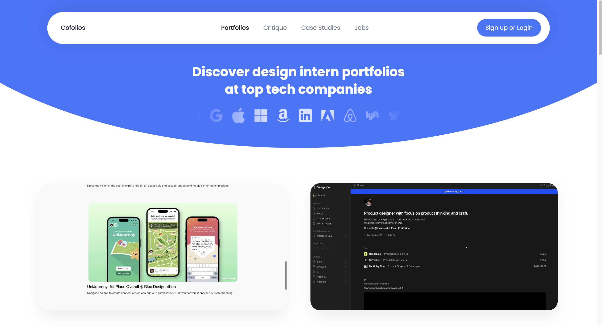
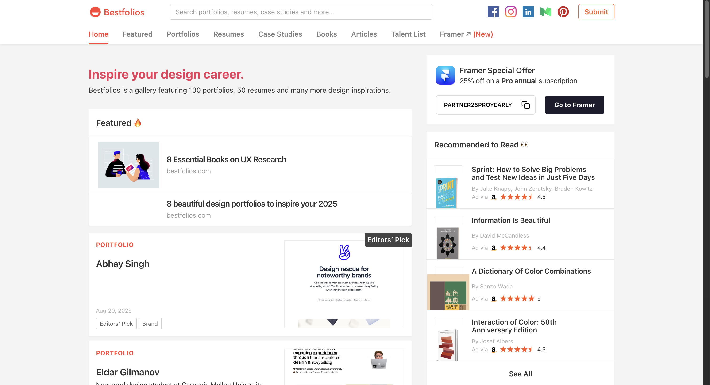

Portfolios for All Pathways
What is a Portfolio? A portfolio is a curated collection of 3-5 projects, often presented as a website. It showcases your skills, process(es), and problem-solving abilities. Your portfolio is an opportunity to highlight your growth, creativity, and unique approach to solving problems. A strong portfolio emphasizes your thinking process, storytelling, and the real-world impact of your work. Employers and clients use portfolios to assess your qualifications and determine if you’re a good fit for their team or project.
Portfolios are typically required for User Experience (UX) Design applications.
Using AI to Support Your Career Development: Sample Prompts for portfolio creation:
- Creating an Online Portfolio: "I want to create an online portfolio to showcase my work in [insert focus area/job topic]. Can you guide me on the best platforms to use (e.g., GitHub, Framer, personal website) and provide tips on making my portfolio visually appealing, user-friendly, and professional?"
- Building a Personal Brand Through My Portfolio: "My portfolio should reflect my unique strengths and personal brand as a [insert focus area/job title]. How can I ensure my portfolio highlights what sets me apart from other candidates? What elements (e.g., color scheme, tone, specific projects) should I focus on to reflect my personal brand?"
- Tailoring a Portfolio to Specific Roles: "I’m applying for roles in [insert focus area/job topic], but my portfolio currently has a wide variety of projects. How can I tailor my portfolio to appeal to a specific job description or role? What should I emphasize for different types of positions (e.g., a data analyst vs. a UX designer)?"
- Showcasing Technical and Soft Skills: "My portfolio includes both technical work (e.g., coding, data analysis) and soft skills (e.g., communication, project management). How can I balance showcasing both types of skills effectively? What are some ways to demonstrate these soft skills through my portfolio projects?"
- Ensuring Portfolio Accessibility: "I want to make sure my portfolio is accessible to a diverse range of potential employers, including those with disabilities. How can I ensure my online portfolio adheres to accessibility standards (e.g., color contrast, screen reader compatibility) while still looking polished and professional?"
- Gathering Testimonials or References for My Portfolio: "I’d like to include testimonials or references from professors, mentors, or colleagues in my portfolio. How can I request these effectively, and what’s the best way to incorporate them into my portfolio to provide social proof and credibility?"
Portfolio Resources
-
Portfolios for All Pathways
A brief summary of what a portfolio is, main components included, and specific information about differences in portfolios depending on your pathway and/or career goals. -
UX Portfolio Guide and Rubric 2025-2026
Overview of best practices for building and refining your UX portfolio, including examples of successful portfolios, tips for creating impactful case studies, and insights into how to effectively showcase your skills. -
Portfolio Rubric
Evaluate your portfolio using the same criteria as UMSI’s Career Development Office.
Portfolio Examples
-
Cofolio
Discover design intern portfolios at top tech companies like Meta, Google, and Apple.
 -
Bestfolio
Bestfolios is a gallery featuring 100 portfolios, 50 resumes and many more design inspirations.

Need feedback? You can always meet with a CDO Career Coach to review your materials.